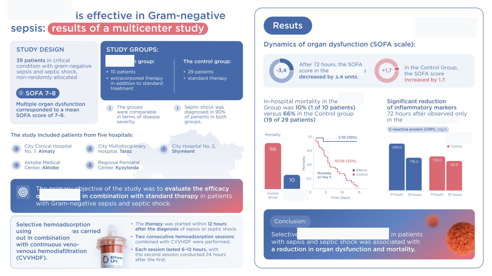
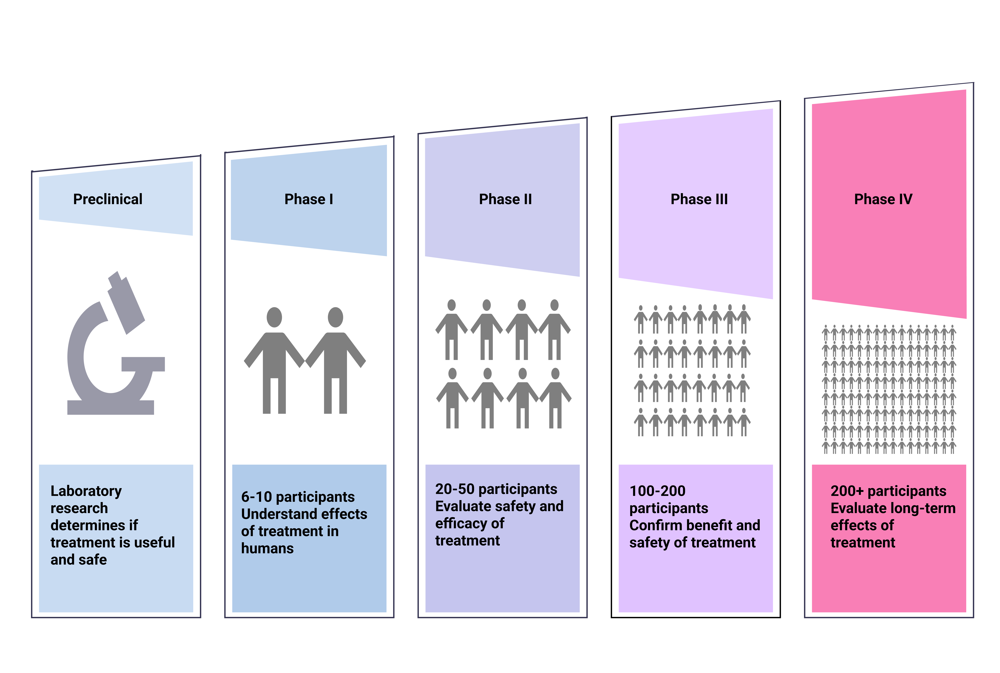

MEDICAL WRITING
Educational Content for Biotech
Hyperskill: Bioinformatics Course Development
• Developed 3 bioinformatics courses for 100,000+ students
• 110+ scientific infographics and visualizations
• Average student rating: 4.3/5
• Ensured scientific accuracy for complex concepts
• Result: High-quality educational content that scaled to thousands of learners.


Science journalism
I have written articles and multimedia for Technology Networks, The Skeptic, Research-HIVE, ABSW, N+1, Knife.Media and others.
One of my articles "What is cats?" was shortlisted for the 2025 New Media Writing Prize in the Journalism category.

Science infographics
Scientific and medical writing can be packaged in the form of infographics: visual communication works both in B2B and B2C.

